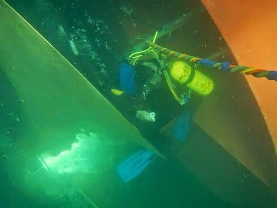
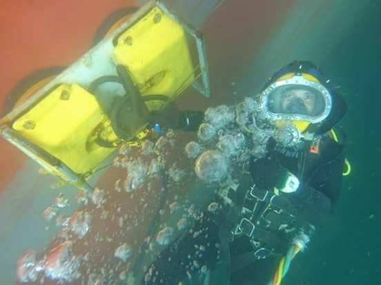

<meta charset="utf-8">
<meta name="viewport" content="width=device-width,initial-scale=1">
<title>Blue Ocean Diving · Underwater hull maintenance</title>
<meta name="description" content="Underwater hull maintenance for large vessels. Fouling removal, in water, with zero delay." data-attr="content" data-pt="Manutencao subaquatica de grandes embarcacoes. Remocao de fouling, na agua, sem atraso." data-en="Underwater hull maintenance for large vessels. Fouling removal, in water, with zero delay.">
<link rel="preconnect" href="https://fonts.googleapis.com">
<link rel="preconnect" href="https://fonts.gstatic.com" crossorigin>
<link href="https://fonts.googleapis.com/css2?family=Archivo:wght@600;700;800&family=IBM+Plex+Sans:wght@400;500;600&family=IBM+Plex+Mono:wght@400;500&display=swap" rel="stylesheet">
<link rel="stylesheet" href="assets/style.css?v=4">

<header class="top" id="cab">
  <span class="rebite a"></span><span class="rebite b"></span>
  <span class="rebite c"></span><span class="rebite d"></span>

  <div class="placa">
    <div class="wrap">
      <i class="forte">Salvador &middot; Bahia &middot; Brasil</i>
      <i class="some">CNPJ 66.316.392/0001-00</i>
      <i class="some" data-pt="Manutenção subaquática de embarcações" data-en="Underwater vessel maintenance">Underwater vessel maintenance</i>
      <div class="lang">
        <button data-lang="en">EN</button>
        <button data-lang="pt">PT</button>
      </div>
    </div>
  </div>

  <div class="wrap top-in">
    <a class="brand" href="index.html">
      
      <span class="brand-name">BLUE OCEAN<span>Diving</span></span>
    </a>
    <button class="menu-toggle" aria-expanded="false" aria-label="Menu">MENU</button>
    <nav class="main">
      <a href="index.html" aria-current="page" data-pt="Início" data-en="Home">Home</a>
      <a href="servicos.html" data-pt="Serviços" data-en="Services">Services</a>
      <a href="sobre.html" data-pt="A empresa" data-en="Company">Company</a>
      <a href="certificacoes.html" data-pt="Segurança" data-en="Safety &amp; Compliance">Safety &amp; Compliance</a>
      <a href="cobertura.html" data-pt="Cobertura" data-en="Coverage">Coverage</a>
      <a href="galeria.html" data-pt="Operações" data-en="Operations">Operations</a>
      <a href="contato.html" data-pt="Contato" data-en="Contact">Contact</a>
    </nav>
  </div>
</header>

<section class="hero on-dark">
  <div class="wrap hero-in">
    <div>
      <div class="kicker" data-pt="Serviços subaquáticos · Salvador, Brasil" data-en="Underwater services · Salvador, Brazil">Underwater services · Salvador, Brazil</div>
      <h1 data-pt="Manutenção subaquática de <em>grandes embarcações</em>." data-en="Underwater hull maintenance for <em>large vessels</em>.">Underwater hull maintenance for <em>large vessels</em>.</h1>
      <p class="lede" style="margin-top:20px" data-pt="Removemos o fouling que derruba a velocidade do navio. Na água, sem docagem, dentro da janela combinada e com conformidade total de segurança." data-en="We remove the fouling that drags your vessel's speed down. In the water, with no drydock, inside the agreed window, under full safety compliance.">We remove the fouling that drags your vessel's speed down. In the water, with no drydock, inside the agreed window, under full safety compliance.</p>
      <div class="hero-actions">
        <a class="btn btn-primary" href="contato.html" data-pt="Solicitar orçamento" data-en="Request a quote">Request a quote</a>
        <a class="btn btn-ghost" href="servicos.html" data-pt="Ver serviços" data-en="See services">See services</a>
      </div>
    </div>
    <dl class="specs">
      <div class="spec"><dt data-pt="Base" data-en="Home base">Home base</dt><dd>Salvador, BR</dd></div>
      <div class="spec"><dt data-pt="Cobertura" data-en="Coverage">Coverage</dt><dd data-pt="Porto de Salvador" data-en="Port of Salvador">Port of Salvador</dd></div>
      <div class="spec"><dt data-pt="Serviço" data-en="Service">Service</dt><dd data-pt="Embarcação na água" data-en="Vessel in the water">Vessel in the water</dd></div>
    </dl>
  </div>
</section>

<section>
  <div class="wrap">
    <div class="duo" style="margin-bottom:56px">
      <div class="sec-head" style="margin:0">
      <span class="num">01</span>
      <h2 data-pt="Fouling não é sujeira. É arrasto." data-en="Fouling is not dirt. It is drag.">Fouling is not dirt. It is drag.</h2>
      <p class="lede" data-pt="A incrustação no casco aumenta a resistência da embarcação na água. Mais resistência significa mais consumo de combustível, menos velocidade e atraso de rota. É um custo que corre todo dia, silencioso, e que não aparece em nenhum relatório até virar problema de programação." data-en="Marine growth on the hull increases the vessel's resistance through water. More resistance means higher fuel burn, lower speed and schedule slippage. It is a cost that runs every single day, quietly, and does not show up in any report until it becomes a scheduling problem.">Marine growth on the hull increases the vessel's resistance through water. More resistance means higher fuel burn, lower speed and schedule slippage. It is a cost that runs every single day, quietly, and does not show up in any report until it becomes a scheduling problem.</p>
      </div>
      <figure class="figura">
        
        <figcaption data-pt="Inspeção no costado, Porto de Salvador. Graneleiro sob bandeira do Panamá" data-en="Hull-side inspection, Port of Salvador. Panama-flagged bulk carrier">Hull-side inspection, Port of Salvador. Panama-flagged bulk carrier</figcaption>
      </figure>
    </div>
    <div class="grid grid-3">
      <div class="cell">
        <span class="idx">01 / 03</span>
        <h3 data-pt="Até 3%" data-en="Up to 3%">Up to 3%</h3>
        <p data-pt="de perda de velocidade já indica incrustação leve no casco, segundo as diretrizes de biofouling da IMO." data-en="of speed loss already indicates light hull fouling, according to the IMO biofouling guidelines.">of speed loss already indicates light hull fouling, according to the IMO biofouling guidelines.</p>
      </div>
      <div class="cell">
        <span class="idx">02 / 03</span>
        <h3 data-pt="20% a 25%" data-en="20% to 25%">20% to 25%</h3>
        <p data-pt="de combustível a mais com meio milímetro de limo em metade do casco. Com cracas, o estudo da IMO chega a 55%." data-en="of extra fuel burned with half a millimetre of slime over half the hull. With barnacles, the IMO study reaches 55%.">of extra fuel burned with half a millimetre of slime over half the hull. With barnacles, the IMO study reaches 55%.</p>
      </div>
      <div class="cell">
        <span class="idx">03 / 03</span>
        <h3 data-pt="Zero docagem" data-en="No drydock">No drydock</h3>
        <p data-pt="Todo o serviço é feito com a embarcação na água, sem tirar o navio de operação." data-en="The entire service is performed with the vessel in the water, without taking the ship out of service.">The entire service is performed with the vessel in the water, without taking the ship out of service.</p>
      </div>
    </div>
  </div>
</section>

<section class="tint">
  <div class="wrap">
    <div class="sec-head">
      <span class="num">02</span>
      <h2 data-pt="O que fazemos" data-en="What we do">What we do</h2>
      <p class="lede" data-pt="Manutenção e inspeção subaquática de embarcações de grande porte." data-en="Underwater maintenance and inspection for large tonnage vessels.">Underwater maintenance and inspection for large tonnage vessels.</p>
    </div>
    <figure class="figura faixa">
      
      <figcaption data-pt="Polimento de hélice, com a embarcação na água" data-en="Propeller polishing, with the vessel still in the water">Propeller polishing, with the vessel still in the water</figcaption>
    </figure>
    <div class="grid grid-2">
      <a class="cell" href="servicos.html">
        <span class="idx">01</span>
        <h3 data-pt="Limpeza de casco" data-en="Hull cleaning">Hull cleaning</h3>
        <p data-pt="Remoção da incrustação em toda a superfície molhada, devolvendo o desempenho hidrodinâmico do casco." data-en="Removal of marine growth across the full wetted surface, restoring the hull's hydrodynamic performance.">Removal of marine growth across the full wetted surface, restoring the hull's hydrodynamic performance.</p>
        <span class="more" data-pt="Ver detalhe" data-en="See detail">See detail</span>
      </a>
      <a class="cell" href="servicos.html">
        <span class="idx">02</span>
        <h3 data-pt="Polimento de hélice" data-en="Propeller polishing">Propeller polishing</h3>
        <p data-pt="Recuperação do acabamento da hélice, onde a perda de eficiência é mais cara por metro quadrado." data-en="Restoring the propeller finish, where efficiency loss is the most expensive per square metre.">Restoring the propeller finish, where efficiency loss is the most expensive per square metre.</p>
        <span class="more" data-pt="Ver detalhe" data-en="See detail">See detail</span>
      </a>
      <a class="cell" href="servicos.html">
        <span class="idx">03</span>
        <h3 data-pt="Inspeção subaquática" data-en="Underwater inspection">Underwater inspection</h3>
        <p data-pt="Vistoria com registro em vídeo e relatório técnico, para classe, seguro ou decisão de manutenção." data-en="Survey with video record and technical report, for class, insurance or maintenance decisions.">Survey with video record and technical report, for class, insurance or maintenance decisions.</p>
        <span class="more" data-pt="Ver detalhe" data-en="See detail">See detail</span>
      </a>
      <a class="cell" href="servicos.html">
        <span class="idx">04</span>
        <h3 data-pt="Reparos na água" data-en="In-water repairs">In-water repairs</h3>
        <p data-pt="Intervenções pontuais sem docagem." data-en="Targeted interventions with no drydock.">Targeted interventions with no drydock.</p>
        <span class="more" data-pt="Bujonamento, anodo de sacrifício e fiber jacket em duto" data-en="Plugging, sacrificial anodes and pipeline fiber jacket">Plugging, sacrificial anodes and pipeline fiber jacket</span>
      </a>
    </div>
  </div>
</section>

<section class="dark on-dark">
  <div class="wrap">
    <div class="sec-head">
      <span class="num">03</span>
      <h2 data-pt="Por que contratam a gente" data-en="Why operators pick us">Why operators pick us</h2>
      <p class="lede" data-pt="Quatro compromissos que assumimos antes de entrar na água." data-en="Four commitments we make before anyone enters the water.">Four commitments we make before anyone enters the water.</p>
    </div>
    <div class="grid grid-4">
      <div class="cell">
        <span class="idx">01</span>
        <h3 data-pt="Planejamento pré-operacional" data-en="Pre-operational planning">Pre-operational planning</h3>
        <p data-pt="A operação é desenhada antes, não improvisada no cais." data-en="The operation is engineered up front, not improvised at the quay.">The operation is engineered up front, not improvised at the quay.</p>
      </div>
      <div class="cell">
        <span class="idx">02</span>
        <h3 data-pt="Mobilização rápida" data-en="Rapid mobilization">Rapid mobilization</h3>
        <p data-pt="Equipe e equipamento prontos para atender dentro da janela do navio." data-en="Team and equipment ready to meet the vessel's window.">Team and equipment ready to meet the vessel's window.</p>
      </div>
      <div class="cell">
        <span class="idx">03</span>
        <h3 data-pt="Compromisso de zero atraso" data-en="Zero-delay commitment">Zero-delay commitment</h3>
        <p data-pt="A embarcação sai no horário. O serviço se ajusta à rota, e não o contrário." data-en="The vessel sails on time. The service adapts to the schedule, never the other way around.">The vessel sails on time. The service adapts to the schedule, never the other way around.</p>
      </div>
      <div class="cell">
        <span class="idx">04</span>
        <h3 data-pt="Alta conformidade de segurança" data-en="High safety compliance">High safety compliance</h3>
        <p data-pt="Mergulho comercial conduzido sob procedimento, com registro de cada etapa." data-en="Commercial diving run under procedure, with every step on record.">Commercial diving run under procedure, with every step on record.</p>
      </div>
    </div>
  </div>
</section>

<section>
  <div class="wrap">
    <div class="sec-head">
      <span class="num">04</span>
      <h2 data-pt="Contrato direto, sem intermediário" data-en="Contract us directly, no middleman">Contract us directly, no middleman</h2>
      <p class="lede" data-pt="Você fecha com quem executa. O pagamento entra direto na nossa conta, sem passar pela agência marítima local do navio. Menos uma camada entre o problema e quem resolve, e um preço que não carrega comissão de terceiro." data-en="You deal with the team that does the work. Payment goes straight into our account, without passing through the vessel's local marine agency. One less layer between the problem and the people who fix it, and a price that carries no third party commission.">You deal with the team that does the work. Payment goes straight into our account, without passing through the vessel's local marine agency. One less layer between the problem and the people who fix it, and a price that carries no third party commission.</p>
    </div>
    <figure class="figura" style="aspect-ratio:16/7;margin:0 0 52px">
      
      <figcaption data-pt="Limpeza de casco em operação, com o navio fundeado" data-en="Hull cleaning under way, vessel at anchor">Hull cleaning under way, vessel at anchor</figcaption>
    </figure>
    <div class="proof">
      <span class="chip"><span class="todo" data-pt="norma de mergulho comercial" data-en="commercial diving standard">commercial diving standard</span></span>
      <span class="chip"><span class="todo" data-pt="sociedade classificadora" data-en="class society">class society</span></span>
      <span class="chip"><span class="todo" data-pt="certificação de segurança" data-en="safety certification">safety certification</span></span>
      <span class="chip"><span class="todo" data-pt="seguro de responsabilidade" data-en="liability insurance">liability insurance</span></span>
    </div>
  </div>
</section>

<section class="cta">
  <div class="wrap cta-in">
    <div>
      <h2 data-pt="Precisa de um casco limpo antes da próxima viagem?" data-en="Need a clean hull before the next voyage?">Need a clean hull before the next voyage?</h2>
      <p class="lede" style="margin-top:16px" data-pt="Diga o porto, a janela e o tipo de embarcação. Respondemos com escopo e prazo." data-en="Tell us the port, the window and the vessel type. We come back with scope and schedule.">Tell us the port, the window and the vessel type. We come back with scope and schedule.</p>
    </div>
    <a class="btn btn-dark" href="contato.html" data-pt="Solicitar orçamento" data-en="Request a quote">Request a quote</a>
  </div>
</section>

<footer class="site">
  <div class="wrap">
    <div class="foot-grid">
      <div>
        
        <span class="brand-name" style="font-size:19px">BLUE OCEAN<span>Diving</span></span>
        <p style="margin-top:16px;max-width:34ch" data-pt="Manutenção subaquática de grandes embarcações. Base em Salvador, Bahia, Brasil." data-en="Underwater maintenance for large vessels. Based in Salvador, Bahia, Brazil.">Underwater maintenance for large vessels. Based in Salvador, Bahia, Brazil.</p>
      </div>
      <div>
        <h4 data-pt="Serviços" data-en="Services">Services</h4>
        <a href="servicos.html" data-pt="Limpeza de casco" data-en="Hull cleaning">Hull cleaning</a>
        <a href="servicos.html" data-pt="Polimento de hélice" data-en="Propeller polishing">Propeller polishing</a>
        <a href="servicos.html" data-pt="Inspeção subaquática" data-en="Underwater inspection">Underwater inspection</a>
        <a href="servicos.html" data-pt="Reparos na água" data-en="In-water repairs">In-water repairs</a>
      </div>
      <div>
        <h4 data-pt="Empresa" data-en="Company">Company</h4>
        <a href="sobre.html" data-pt="A empresa" data-en="About us">About us</a>
        <a href="certificacoes.html" data-pt="Segurança" data-en="Safety">Safety</a>
        <a href="cobertura.html" data-pt="Cobertura" data-en="Coverage">Coverage</a>
        <a href="galeria.html" data-pt="Operações" data-en="Operations">Operations</a>
      </div>
      <div>
        <h4 data-pt="Contato" data-en="Contact">Contact</h4>
        <a href="mailto:commercial@serviceocean.com.br">commercial@serviceocean.com.br</a>
        <a href="https://wa.me/5571991015763">+55 71 99101-5763</a>
        <p style="margin-top:14px"><span class="todo" data-pt="confirmar canais oficiais" data-en="confirm official channels">confirm official channels</span></p>
      </div>
    </div>
    <div class="foot-bottom">
      <span>© 2026 Blue Ocean Diving</span>
      <span data-pt="Rascunho de trabalho · não publicado" data-en="Working draft · not published">Working draft · not published</span>
    </div>
  </div>
</footer>
<script src="assets/i18n.js?v=2"></script>
